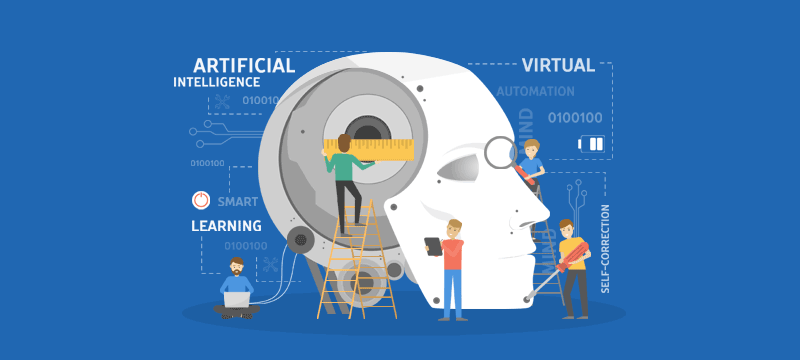

Μια μικρή εισαγωγή στην Τεχνητή νοημοσύνη
Τεχνητή νοημοσύνη είναι ένας κλάδος της πληροφορικής ο οποίος ασχολείται με τη σχεδίαση και την υλοποίηση συστημάτων που μιμούνται στοιχεία της ανθρώπινης συμπεριφοράς. Αποτελεί σημείο τομής μεταξύ πολλών επιστημών όπως της πληροφορικής, της ψυχολογίας, της φιλοσοφίας και άλλων με στόχο τη σύνθεση ευφυούς συμπεριφοράς και συνήθως εφαρμόζεται σε μηχανές ή υπολογιστές ειδικής κατασκευής.
Σε πολλές ταινίες επιστημονικής φαντασίας η τεχνητή νοημοσύνη είναι τόσο προχωρημένη που είναι αδύνατον να συγκριθεί με την εξέλιξη της τεχνητής νοημοσύνης τι χρονολογίας μας. Πολλοί φοιτητές που είναι στον κλάδο της πληροφορικής έχουν μία μικρή ιδέα για το τι σημαίνει τεχνητή νοημοσύνη και το ποσό δύσκολη είναι να εξελιχθεί.